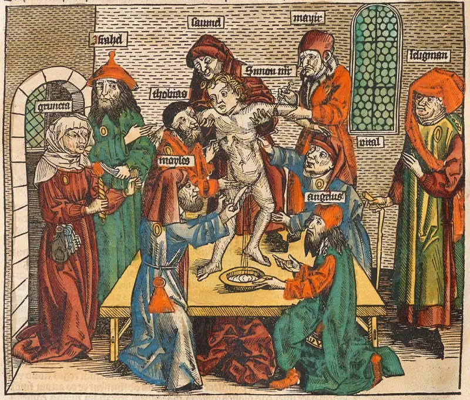

otras noticias
Desde 'Pizzagate' hasta QAnon, las teorías de la conspiración pueden parecer como un producto del mundo moderno, difundidas a través de la naturaleza omnipresente de las redes sociales.
El 4 de diciembre de 2016, Edgar Welch irrumpió en una pizzería en las afueras de Washington y abrió fuego. El atacante pensó que así detendría una supuesta red de prostitución infantil vinculada a Hilary Clinton, una de las muchas noticias inventadas que circularon en esos meses para afectar la campaña presidencial de la candidata demócrata.
Eso muestra que un clic equivocado puede llevarte al laberinto digital sin sentido de las teorías de conspiración, pero, por supuesto, este no es un fenómeno exclusivo de nuestra época.
"Las conspiraciones han existido desde que ha habido seres humanos. Es una forma de explicar lo inexplicable", dice Kamy Akhavan, director ejecutivo del Centro Dornsife para el Futuro Político, de la Universidad de California del SUR (USC por sus siglas en inglés).
"Cuando comencé a aprender sobre QAnon (la teoría de la conspiración según la cual el expresidente de EE.UU. Donald Trump luchaba contra la pedofilia y el "Estado profundo"), me sorprendió mucho porque parecía casi como si tuvieran un antiguo libro medieval y lo estuvieran leyendo. Era como la máquina de pinball, todas las luces comenzaron a iluminarse, aunque vi patrones nuevos", señala Jay Rubenstein, director del Centro Dornsife para el Mundo Premoderno de la misma universidad.
"No me propuse estudiar teorías de conspiración, pero creo que en el contexto de los últimos dos años tuve que comenzar a pensar en ellas porque se hizo evidente para mí que realmente pueden afectar la forma en que funciona el mundo", añade.
"Una teoría de la conspiración es la idea de que un grupo nefasto está conspirando hacia un objetivo malicioso", resume Anni Sternisko, estudiante de doctorado de la Escuela de Psicología Social de la Universidad de Nueva York.
Las teorías de conspiración cubren todo, desde mensajes subliminales en anuncios publicitarios hasta el alunizaje.
Pero hay algo que las une...
"Es una narrativa simple. Tienes que tener villano, que está escondido, haciendo todo su mal sin ser visto. Tienes a las víctimas, que son oprimidas y pobres y merecen nuestra simpatía. Y luego tienes al héroe que va a venir y desenmascarar al villano", dice Dan Edelstein, profesor de francés e historia en la Universidad de Stanford.
En la Edad Media, el mayor villano era el mismísimo diablo.
"La teoría de la conspiración que realmente comenzó todo en la Edad Media era el antijudaísmo", cuenta Rubenstein.
"La creencia era que los judíos estaban conspirando para recuperar la Tierra Santa a través de un pacto con el diablo por el cual sacrificarían a un niño cristiano cada año en Pascua hasta que, finalmente, el diablo les devolvería Jerusalén.
"Una vez que esta idea echó raíces, pareció convertirse casi en una cuestión de hábito desarrollar creencias conspirativas sobre cómo se manejaba el mundo".